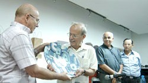

En una sala colmada de público se presentó este último miércoles 13 de julio el título Proibito heroes, de Ricardo Alarcón de Quesada, Presidente de la Asamblea Nacional.
Tubal Páez, presidente de la Unión de Periodistas de Cuba y Enrique Román, Vice Presidente Primero del Instituto Cubano de Amistad con los Pueblos hicieron la presentación del libro.
Proibito heroes, páginas de justicia
di: Madeleine Sautié Rodríguez
madeleine@granma.cip.cu


El enjundioso contenido que fue dado a conocer entonces en ese medio extranjero, hilvanado en la serie The Untold Story of the Cuban Five (La Historia no contada de los Cinco Cubanos), ve la luz ahora con el sello de la colección Sur, auspiciada por el Festival Internacional de Poesía de La Habana. En esos textos, el también Miembro del Buró Político denuncia con sólidos argumentos al gobierno de los Estados Unidos, responsable máximo de la injusticia no solo por pretender silenciarla sino por promover el terrorismo contra Cuba y proteger a quienes lo llevan a vías de hecho.
Con el rubro Regreso a una Historia no contada, el Presidente del Parlamento cubano explicó las razones que lo condujeron a escribirlos: “No intentan analizar a fondo, con rigor técnico-jurídico, un enmarañado proceso judicial que además de profundamente arbitrario fue, en su momento, el más prolongado de la historia norteamericana. Se trata más bien de lo que algunos han llamado periodismo de urgencia”.
“La total inocencia de nuestros compañeros consta en documentos oficiales del gobierno y de tribunales norteamericanos”, dijo y añadió que, Tuttavia, el Imperio ha ordenado que esas pruebas sean sepultadas y sobre ellas ejerce una censura total. Las grandes corporaciones mediáticas las ignoran siempre, sistemáticamente, sin excepción.
Refiriéndose al documento Petición de Emergencia, de la Fiscalía General de Estados Unidos, fechado en mayo 30 della 2001, “cuando el juicio de Miami se acercaba a la hora del veredicto” expresó que “ese reconocimiento explícito, solemne, del fracaso de la calumniosa acusación, cumple ya más de diez años de total ocultamiento”.
Denunció que “Washington se resiste a revelar todo el alcance de esta conspiración y puede hacerlo gracias a la complicidad o la torpeza de otros ‘informadores’”.
Los medios, definió, “son colosales corporaciones que determinan lo que la gente puede conocer, manipulan su capacidad de pensar y sentir, embrutecen y promueven la banalidad, el egoísmo y el aislamiento entre los seres humanos. Son ellos los que diseminan las noticias o las hacen desaparecer. Es una verdadera dictadura global que penetra por todas partes muchas veces sin ser advertida.
Aludió en su intervención a la responsabilidad de los intelectuales y periodistas:
Solo escapando de las redes de la tiranía mediática, buscando fuera del menú “informativo” que nos impone, podremos acceder a la verdad y alcanzar la cualidad del revolucionario, la de “seres pensantes no seres conducidos”, para usar la definición de Julio Antonio Mella. Solo si además somos capaces de ayudar a otros a emanciparse del nuevo yugo y unirnos y articular tantos esfuerzos dispersos estaríamos cumpliendo nuestro deber para con los Cinco hermanos. Sé que es difícil, pero vale la pena. Después de todo, ellos dieron sus vidas por nosotros.
Regreso a una Historia No Contada
Palabras de Ricardo Alarcón de Quesada en la presentación del libro “Los Héroes Prohibidos”, en la UNEAC, Luglio 13 di 2011.
Agradezco a Miguel Barnet, Aitana Alberti, Alex Pausides y a todos los que realizaron esta nueva edición de “Los Héroes Prohibidos” y a todos los que nos acompañan esta tarde. Quisiera dar las razones que me llevaron a escribirlo y son probablemente su única justificación.
La parte más extensa de este pequeño libro es la traducción a nuestro idioma de 16 artículos que aparecieron en la revista CounterPunch en una serie subtitulada “The Untold Story of the Cuban Five” (La Historia no contada de los Cinco Cubanos). Carecen de méritos literarios y tampoco intentan analizar a fondo, con rigor técnico-jurídico, un enmarañado proceso judicial que además de profundamente arbitrario fue, en su momento, el más prolongado de la historia norteamericana. Se trata más bien de lo que algunos han llamado periodismo de urgencia. Les digo cómo sucedió.
Viví mucho tiempo en New York donde conservo no pocos amigos, incluyendo los que sostienen la importante publicación alternativa ya mencionada. Dialogando con ellos comprobamos lo obvio, que allá casi nadie sabe algo de este caso y la necesidad imperiosa de que esta historia fuera expuesta y en un lenguaje comprensible para el público.
Aunque soy miembro de la UNEAC, por obra y gracia de vuestra generosidad, no puedo considerarme un escritor y mucho menos bilingüe, pero accedí a cumplir el difícil encargo porque, sencillamente, pensé – o más exactamente, pensamos, con Jeffrey St.Clair y Alexander Cockburn – que era mi deber. No fui a la playa en el verano de 2009, pero créanme que pasé unas vacaciones inolvidables braceando en un mar de documentos legales y bregando con la lengua de Shakespeare.
Ustedes juzgarán el resultado que es también un hermoso acto solidario del Festival Internacional de Poesía de la Habana, de la Colección Sur y de la Unión de escritores y Artistas de Cuba.
Pero no nos engañemos. La historia de los Cinco sigue siendo una historia no contada. De ella, nada o casi nada sabe la inmensa mayoría de los norteamericanos ¿Qué más podemos hacer? Si me permiten repetir el inapelable reclamo de los niños de La Colmenita.
Porque el tiempo pasa y pronto serán trece años desde que Gerardo, Ramón, Antonio, Fernando y René fueron secuestrados. Una tras otra se han ido agotando las posibilidades de devolverles la libertad por la vía de los tribunales, donde sólo les queda ya un último recurso, el procedimiento extraordinario o Habeas Corpus. Para liberarlos sería indispensable movilizar a mucha gente, a ese “jurado de millones” del que ha hablado Gerardo y esa meta está lejos aún, muy lejos. No la alcanzaremos formulando buenos deseos, ni repitiendo consignas, ni con una propaganda a menudo autocomplaciente que predica a los conversos y convierte en rito lo que tiene que ser, ante todo, una obra de amor.
La total inocencia de nuestros compañeros consta en documentos oficiales del gobierno y de tribunales norteamericanos. Pero eso poco importa. Porque los documentos demuestran que ellos no cometieron crimen alguno, el Imperio ha ordenado que esas pruebas sean sepultadas y sobre ellas ejerce una censura total. Las grandes corporaciones mediáticas, esas a las que Chomsky definió, con una palabra, “disciplinadas”, las ignoran siempre, sistemáticamente, sin excepción.
Que esos medios actúen así, que cumplan sus instrucciones con obediencia, es natural, comprensible. Pero no son ellos los únicos que practican un silencio indecoroso. La verdad es siempre revolucionaria y por eso hay que decir que ese silencio va mucho más allá, se extiende hasta muchos de los llamados medios alternativos y llega también a algunos que se interesan, Tuttavia, por la suerte de “Los cinco héroes prisioneros del Imperio” como suelen reiterar.
Entonces ¿qué hacer?
En el juicio de Nuremberg un fiscal señaló que los que estaban entonces en el banquillo de los acusados no eran los únicos culpables. También lo eran quienes no los denunciaron, los que sabían y callaron.
Por lo pronto excúsenme que vuelva a mostrar este documento. Es de la Fiscalía General de Estados Unidos, fechado mayo 30 di 2001, cuando el juicio de Miami se acercaba a la hora del veredicto. Se titula “Petición de Emergencia”. Y ¿qué pidieron aquí? Que se detuviera el juicio y fuese modificada la acusación principal contra Gerardo porque “a la luz de las pruebas presentadas” era imposible sostenerla y conduciría probablemente a la absolución de nuestro compañero en el cargo más grave formulado contra él, “conspiración para cometer asesinato en primer grado”.
Pero este documento, que es el reconocimiento explícito, solemne, del fracaso de la calumniosa acusación, cumple ya más de diez años de total ocultamiento. Y hay algo más que prueba su inocencia.
Recordemos que la infamia contra Gerardo se fundaba en algo con lo que él no tuvo absolutamente nada que ver, el lamentable incidente del 24 Di febbraio 1996 y el derribo en aguas cubanas de dos avionetas pertenecientes a un grupo terrorista que muchas veces había violado nuestro espacio soberano. Según los radares cubanos el hecho ocurrió aquí, muy cerca del Malecón habanero; los radares norteamericanos ofrecían datos contradictorios o confusos, di conseguenza, la Organización de Aviación Civil Internacional (OACI), que investigaba el suceso, solicitó al gobierno de Estados Unidos las imágenes tomadas por los satélites norteamericanos. Washington se negó a entregar esas imágenes hace quince años, se negó a la misma petición durante el juicio de Miami y se niega nuevamente ahora cuando lo reclama otra vez la defensa de Gerardo. Ha podido hacerlo sin molestia alguna porque su sospechosa conducta no ha trascendido al público pues de ese asunto nada dicen quienes supuestamente se dedican a informar.
Escasa repercusión ha tenido también el descubrimiento en 2006 de que los medios locales de Miami, los que amenazaron al tribunal y crearon un ambiente de odio y hostilidad contra los acusados, cumplían esa sucia labor con financiamiento del gobierno federal. Hace cinco años que Washington se resiste a revelar todo el alcance de esta conspiración y puede hacerlo gracias a la complicidad o la torpeza de otros “informadores”.
Hace ya más de un siglo alguien muy autorizado puso el dedo en la llaga. Me refiero a John Swinton que fue durante un largo período redactor jefe de The New York Times. Escuchémosle: “Si publicara mis opiniones honestas en mi periódico antes de veinticuatro horas quedaría sin empleo. El oficio de los periodistas es destruir la verdad, mentir abiertamente, pervertir, difamar, adular a los pies del dios dinero… Ustedes lo saben y yo lo sé… Somos los instrumentos y los vasallos de los hombres ricos que mandan tras el escenario. Somos las marionetas, ellos mueven los hilos y nosotros bailamos. Nuestros talentos, nuestras posibilidades y nuestras vidas son la propiedad de otros hombres. Somos prostitutos intelectuales.”
En el tiempo transcurrido desde que Swinton hiciera su memorable denuncia la situación ha evolucionado en un sentido aún más desfavorable para la libertad. Los dueños de antaño se fusionan hoy en grandes conglomerados que poseen no solo publicaciones impresas, sino también la televisión, las agencias cablegráficas y otros medios de comunicación y la llamada industria cultural. Son colosales corporaciones que determinan lo que la gente puede conocer, manipulan su capacidad de pensar y sentir, embrutecen y promueven la banalidad, el egoísmo y el aislamiento entre los seres humanos. Son ellos los que diseminan las noticias o las hacen desaparecer. Es una verdadera dictadura global que penetra por todas partes muchas veces sin ser advertida.
Es duro el desafío para quienes intentan ser la conciencia crítica en la sociedad contemporánea. Es grande la responsabilidad de los intelectuales, fra loro, los periodistas.
Sólo escapando de las redes de la tiranía mediática, buscando fuera del menú “informativo” que nos impone, podremos acceder a la verdad y alcanzar la cualidad del revolucionario, la de “seres pensantes no seres conducidos”, para usar la definición de Julio Antonio Mella. Sólo si además somos capaces de ayudar a otros a emanciparse del nuevo yugo y unirnos y articular tantos esfuerzos dispersos estaríamos cumpliendo nuestro deber para con los Cinco hermanos. Sé que es difícil, pero vale la pena. Después de todo, ellos dieron sus vidas por nosotros.
El Silencio en el Caso de los Cinco: Quieren Imponernos la Sordomudez Masiva
Palabras pronunciadas por Tubal Páez, Presidente de la Unión de Periodistas de Cuba, en la presentación del libro Los Héroes Prohibidos.
Es para mí un honor y un placer encontrarme hoy junto a esposas y madres de nuestros cinco hermanos presos en Estados Unidos, junto a Ricardo Alarcón, ese incansable gladiador por la liberación de ellos, y entre familia de escritores y artistas de Cuba, símbolo de la identidad nacional, figuras de la música, del teatro, las artes plásticas, la danza, y sobre todo de la literatura, puesto que el periodismo fue un desprendimiento de esta.
Entonces, como estamos también entre muchas personas que vivimos en la palabra y para la palabra, que les rendimos culto y la respetamos, cabría recordar aquí algunas definiciones del Diccionario de nuestra lengua. Ad esempio, di mentira se dice que es expresión o manifestación contraria a lo que se sabe, se cree o se piensa. De igual manera se nombra así a esa manchita blanca que suele aparecer en las uñas. En otro sentido se usa con el fin de servir o agradar a alguien.
Acudimos a ella para coger a alguien en la mentira con el propósito hallar o verificar que ha mentido. A veces decimos mentira para sacar la verdad cuando se finge que se sabe algo, para hacer que lo manifieste otra persona que tiene noticia de ello. También el diccionario recoge la expresión muy generalizada, ¡parece mentira! para dar a entender la extrañeza, sorpresa o admiración que causa algo.
Hace pocas semanas reflexionábamos sobre esto en el lanzamiento del libro “Señora Mentira”, de Nicanor León, una documenta recopilación de las principales campañas de embustes contra Cuba emprendidas por Estados Unidos durante más de medio siglo con el propósito de torcer el camino independiente de los cubanos.
La mentira no es solo una manipulación simple o elaborada que explota sentimientos y prejuicios; es también una violación flagrante de la ética y la razón civilizada. Es una regresión de la inteligencia pues destruye valores del entendimiento social, sustentados en siglos de desarrollo de las relaciones humanas, que han contribuido a perpetuar la especie.
Las grandes religiones y culturas estigmatizan la mentira y reprueban a quienes la utilizan para dañar a otros o por propio beneficio, es una desvergüenza que se aprovecha, como en las estafas, de la inocencia y la credulidad del otro. Preceptos en códigos y los libros de fe la condenan.
Este libro que se presenta hoy, “Los Héroes Prohibidos”, de Ricardo Alarcón, trata de algo peor que la mentira: el silencio; en este caso del silencio como sanción adicional a la injusta condena a Gerardo, Ramón, Antonio, Fernando y René, y también a la opinión pública, que tiene el derecho de conocer la verdad.
Hemos llegado a ser humanos porque nos comunicamos con la palabra. Por eso su primera acepción, volviendo al Diccionario, silencio significa:
Abstención de hablar. Ausencia de ruido (de sonidos). Falta u omisión de algo por escrito. Pasividad de la Administración ante una petición o recurso a la que la ley da un significado estimatorio o desestimatorio.
También allí encontramos definiciones para frases como en silencio, o sea, sin protestar, sin quejarse. Entregar alguien algo al silencio, quiere decir olvidarlo, callarlo, no hacer más mención de ello. Imponer alguien el silencio no es otra cosa que hacerlo callar o reprimirle una pasión. Pasar alguien en silencio algo, es omitirlo, callarlo, no hacer mención de ello cuando se habla o escribe.
La mentira es abierta, entendible, mesurable, contestable, rebatible, despreciable e, anche, aplastable. El silencio es la nada, o sea, la negación absoluta de las cosas. La nulidad. La inexistencia. Lo inexplicable. El hueco. El pozo ciego. El amordazamiento. Por eso casi todas las acepciones de esa palabra tienen una connotación negativa.
El silencio, por su perversidad “corrompe las costumbres o el orden y estado habitual de las cosas”.
Hay fábricas de silencio, de mordazas, de trapos para embutir en la boca, de plantas generadoras de torbellinos de opacidad y humo que evaporan palabras, imágenes, sonidos. En esas usinas se hacen extirpaciones de sentidos para imponernos la sordomudez masiva.
La omisión del caso de nuestros compatriotas encarcelados en Estados Unidos, es la materia prima de un producto elite en el mercado mediático actual: la censura por consenso. O dicho en términos más exactos: la conspiración para cometer silencio, en la que los conjurados son los amos de las corporaciones informativas, que proclaman, de pantalla para afuera, una objetividad que por dentro ignoran.
Tanto la mentira como el silencio tienen un antónimo: la verdad. Hay que denunciar ese agujero negro de los grandes medios que succiona la verdad de la injusticia cometida contra los Cinco luchadores antiterroristas. A esas fuerzas poderosísimas pero no invencibles se enfrenta Ricardo Alarcón, cuya palabra y acción se han convertido en ejemplos para desenmascarar toda la sordidez del proceso.
Alarcón, ha escrito con la contundencia de sus argumentaciones y la pasión que despierta sentimientos, la serie de artículos periodísticos publicados en www.counterpunch.org, que tienen una nota introductoria y otro trabajo aparecido en La Jornada, de México.
Este volumen es una luz a seguir, que en el caso de las mujeres y los hombres de las letras, como los que hacen literatura y periodismo, ayuda a encontrar referentes de creatividad, para conmover y hacer realidad las palabras del autor en el Encuentro de Cubanos residentes en el exterior el pasado año en La Habana, las cuales aparecen al final del libro bajo el título de “La maldición gitana”:
“Compatriotas –dijo Alarcón allí y repite ahora en “Los héroes prohibidos”–: Gerardo dijo en una ocasión que la justicia solo vendrá cuando la dicte “un jurado de millones”. A nosotros nos toca movilizar esos millones dondequiera que estemos”.
Este libro, que nos llega gracias a la Colección Sur dirigida por Alex Pausides, y que ha sido auspiciada por el Festival Internacional de Poesía de La Habana, ya camina y nos da la mano y el aliento para lograr el fallo del gran jurado de millones. Nos acompañarán la gente, cada vez más cansada de que su conciencia sea tratada con tanto desprecio por el sistema mediático que fabrica las mentiras y los silencios.